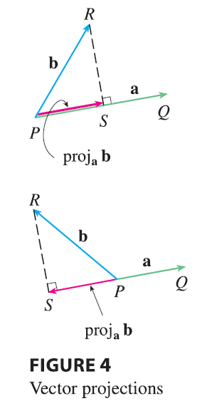
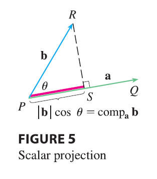

Figure 4 shows representations \(\vec{PQ}\) and \(\vec{PR}\) of two vectors a and b with the same initial point \(P\). If \(S\) is the foot of the perpendicular from \(R\) to the line containing \(\vec{PQ}\), then the vector with representation \(\vec{PS}\) is called the vector projection of b onto a and is denoted by proj\(_\mathbf{a}\)b.

The scalar projection of b onto a (also called the component of b along a) is defined to be the signed magnitude of the vector projection, which is the number \(|\mathbf{b}|\cos\theta\), where \(\theta\) is the angle between a and b. (See Figure 5.) This is denoted by comp\(_\mathbf{a}\)b. Observe that it is negative if \(\pi/2 < \theta \le \pi\). The equation \[ \mathbf{a} \cdot \mathbf{b} = |\mathbf{a}||\mathbf{b}|\cos\theta = |\mathbf{a}|(|\mathbf{b}|\cos\theta) \] shows that the dot product of a and b can be interpreted as the length of a times the scalar projection of b onto a. Since \[ |\mathbf{b}|\cos\theta = \frac{\mathbf{a} \cdot \mathbf{b}}{|\mathbf{a}|} = \frac{\mathbf{a}}{|\mathbf{a}|} \cdot \mathbf{b} \] the component of b along a can be computed by taking the dot product of b with the unit vector in the direction of a. We summarize these ideas as follows.
Scalar projection of b onto a: \(\text{comp}_\mathbf{a}\mathbf{b} = \frac{\mathbf{a} \cdot \mathbf{b}}{|\mathbf{a}|}\) Vector projection of b onto a: \(\text{proj}_\mathbf{a}\mathbf{b} = \left(\frac{\mathbf{a} \cdot \mathbf{b}}{|\mathbf{a}|}\right)\frac{\mathbf{a}}{|\mathbf{a}|} = \frac{\mathbf{a} \cdot \mathbf{b}}{|\mathbf{a}|^2}\mathbf{a}\)
Notice that the vector projection is the scalar projection times the unit vector in the direction of a.
EXAMPLE 6 Find the scalar projection and vector projection of \(\mathbf{b} = \langle 1, 1, 2 \rangle\) onto \(\mathbf{a} = \langle -2, 3, 1 \rangle\).